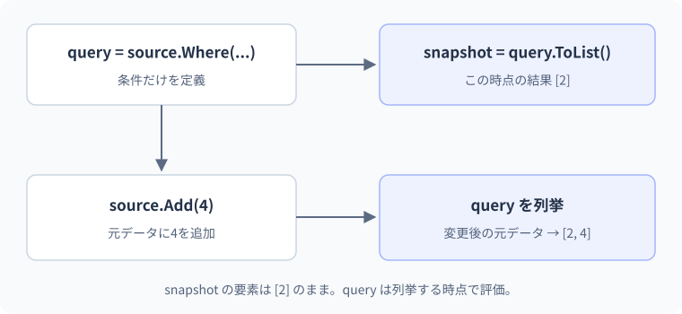

19 遅延実行と集計 — 詳細解説
クエリ定義と列挙の時点。
Whereを書いた時点と、結果を表示した時点の間で元データが変わるとどうなるでしょうか。時間の順番に沿って、クエリの定義・列挙・ToListによる保存を分けます。
IEnumerableと列挙時の処理
IEnumerable<T>は、T型の値を順に取り出せるという約束です。配列のように既に存在する値を読むことも、必要になるたびに値を計算することもできます。foreachは列挙子と呼ばれる進行役を使って、次の要素へ進み、現在の要素を読みます。一般的にはGetEnumeratorで列挙子を取得し、MoveNextで次へ進み、Currentで値を読みます。配列などではコンパイラーが別の効率的な形へ変換する場合もあります。
列挙子は「今どこまで読んだか」という状態を持ちます。IEnumerableとIEnumeratorを同じものと考えないでください。前者は読み進める仕組みを提供する側、後者は一回の読み進めを管理する側です。
yield returnで一つずつ値を渡す
Console.WriteLine("A:列を取得");
IEnumerable<int> numbers = CreateNumbers();
Console.WriteLine("B:列挙を開始");
foreach (int number in numbers)
{
Console.WriteLine($"受取:{number}");
}
static IEnumerable<int> CreateNumbers()
{
Console.WriteLine("C:生成開始");
yield return 10;
Console.WriteLine("D:次へ進む");
yield return 20;
}期待出力は次の順です。
A:列を取得
B:列挙を開始
C:生成開始
受取:10
D:次へ進む
受取:20yield returnは、列挙している側へ一つ値を渡し、次に要求されたときに続きから進める構文です。通常のreturnのように処理全体を終了するわけではありません。コンパイラーは途中の位置や必要なローカル変数を保持できる形へ変換します。こうした「状態と、次にする処理を保持する仕組み」を状態機械と呼びます。asyncでも別の目的で似た発想が使われますが、yield自体が非同期になるわけではありません。
yield returnを使う列は、結果を全部作り終えてから一括で渡すとは限りません。
- foreach側列の生成側
- 列の生成側foreach側
- foreach側列の生成側
- 列の生成側foreach側
yield returnで一つ返した後、次の要求でその続きへ進みます。途中で列挙をやめれば、後の要素を作る処理まで必ず実行されるわけではありません。
遅延実行で値を見る時点を追う
using System.Linq;
var numbers = new List<int> { 1, 2, 3 };
IEnumerable<int> query = numbers.Where(number => number >= 2);
numbers.Add(4);
Console.WriteLine(string.Join(",", query));
numbers.Remove(2);
Console.WriteLine(string.Join(",", query));期待出力は2,3,4、3,4です。Whereを呼んだ時点の要素を凍結しているのではありません。Joinが列挙するとき、その時点のListから条件に合う値を読みます。二回目の列挙ではListの状態が変わっています。
| 時点 | numbers | queryについて起きたこと |
|---|---|---|
| Whereを呼ぶ | [1,2,3] | 抽出を表す列を作る |
| Add(4) | [1,2,3,4] | まだ結果を保存していない |
| 1回目のJoin | [1,2,3,4] | 2,3,4を取り出す |
| Remove(2) | [1,3,4] | 元のListを変更 |
| 2回目のJoin | [1,3,4] | 3,4を取り出す |
列挙中に同じListを変更すると、別の問題としてInvalidOperationExceptionが起きる場合があります。「列挙する前に変更する」と「列挙中に変更する」を区別します。
ToListでその時点の結果を保存する
using System.Linq;
var numbers = new List<int> { 1, 2, 3 };
List<int> snapshot = numbers.Where(number => number >= 2).ToList();
numbers.Add(4);
Console.WriteLine(string.Join(",", snapshot));
Console.WriteLine(string.Join(",", numbers));期待出力は2,3、1,2,3,4です。ToListが呼び出されたところで最後まで列挙し、その結果を新しいListへ入れます。スナップショットとは、ある時点の状態を記録したものです。ただし、要素が参照型なら参照をコピーするため、オブジェクト内部まで独立した深いコピーにはなりません。第13・14レッスンのコピーの境界がここにもつながります。
本文の実例との対応：クエリ定義と列挙の時点
次の図は本文の実例「検索条件と検索結果を分ける」を使った補助例です。この節のコードとは変数や入力値が異なるため、処理の対応に注目します。

間違い：同じ列挙結果が無料で再利用されると思う
using System.Linq;
IEnumerable<int> query = new[] { 1, 2, 3 }.Where(number =>
{
Console.WriteLine($"判定:{number}");
return number >= 2;
});
Console.WriteLine(query.Count());
Console.WriteLine(query.Sum());このWhereの例では、Countのために1、2、3を判定し、2を表示した後、Sumのために再び1、2、3を判定して5を表示します。一部の列や操作には要素を実際に読み進めず件数を得る最適化もあるため、「全てのCountが必ず全列挙」と一般化してはいけません。ここでは条件を評価するWhereに表示処理を入れて、読み直しを観察しています。
一回の結果を複数回使うなら、用途に応じてToListで保存します。
using System.Linq;
List<int> result = new[] { 1, 2, 3 }
.Where(number => number >= 2)
.ToList();
Console.WriteLine(result.Count);
Console.WriteLine(result.Sum());期待出力は2、5です。ListのCountプロパティは保持している件数を読みます。必要以上のToListはメモリの使用と先行処理を増やすので、何回使うか、いつ確定したいかで選びます。
境界・比較例：カテゴリ別の合計
GroupByでカテゴリごとの集合を作り、それぞれをSumで集計します。表示順はOrdinalで明示しています。
var items = new[] { (Category: "本", Amount: 1000), (Category: "文具", Amount: 300), (Category: "本", Amount: 500) };
foreach (var group in items.GroupBy(x => x.Category).OrderBy(g => g.Key, StringComparer.Ordinal))
Console.WriteLine($"{group.Key}: {group.Sum(x => x.Amount)}円");想定出力
文具: 300円
本: 1500円遅延・逐次・一括保持を分ける
| 操作 | 主なタイミング | 結果を出すために必要なこと | 選ぶ目的 |
|---|---|---|---|
| Where / Select | 列挙時 | 各要素を判定・変換 | 順に加工 |
| Take(3) | 列挙時 | 必要な先頭部分を読む | 先頭だけ欲しい |
| OrderBy | 列挙時 | 並べ替え対象を保持して整列 | 全体の順序を決める |
| ToList / ToArray | 呼び出し時 | 最後まで読み結果を保存 | 今の結果を再利用 |
| Any | 呼び出し時 | 存在が分かれば止められる | あるかどうか |
| Sum / Average | 呼び出し時 | 集計に必要な値を読む | 一つの集計値を得る |
遅延実行は「一つずつ低メモリで必ず処理する」という意味ではありません。OrderByも開始は遅延しますが、最初の結果を返すために入力を保持して並べる必要があります。
実行開始のタイミングと、結果を出すために必要な入力の量は別の軸です。
必要な要素を順に調べるストリーミング処理
並べ替えに必要な要素を集めるバッファリングを伴う処理
Whereは条件に合う要素を探しながら順に返せます。OrderByの並び順を決めるには通常、対象の要素全体を確認する必要があります。どちらも遅延実行だから同じ処理量、とは考えません。
集計と空の列を一緒に設計する
using System.Linq;
int[] scores = { 60, 80, 100 };
Console.WriteLine(scores.Any(score => score < 60));
Console.WriteLine(scores.Sum());
Console.WriteLine(scores.Average());
Console.WriteLine(scores.Max());期待出力はFalse、240、80、100です。Anyは条件を満たす値が存在するか、Sumは合計、Averageは平均、Maxは最大値です。Sumの返す型などは要素型により異なります。intのSumでは合計が範囲を超えると例外になるので、業務の最大値も検討します。
| 操作：intの列 | 空の場合 | 何を決めるべきか |
|---|---|---|
| Any() | false | 空を正常として扱うか |
| Count() | 0 | 件数の意味 |
| Sum() | 0 | 空の合計0で業務上よいか |
| Average() / Max() | InvalidOperationException | データなしを別表示にするか |
| First() | InvalidOperationException | 必ず一つ以上ある根拠 |
| FirstOrDefault() | 0 | 本物の0と区別できるか |
| Single() | 0件でも2件以上でも例外 | 必ず一件という制約 |
nullable数値用のオーバーロードなどは挙動が異なります。上表はintの列に範囲を限定しています。FirstOrDefaultに変えるだけで全て安全とは言えません。
間違い：空の平均をそのまま計算する
using System.Linq;
int[] scores = Array.Empty<int>();
Console.WriteLine(scores.Average());コンパイル可能な形ですが、実行すると平均対象がなくInvalidOperationExceptionになります。確認するのは例外の行だけでなく、抽出後の件数です。次は「データなし」を別の状態として扱います。
using System.Linq;
int[] scores = Array.Empty<int>();
if (scores.Length == 0)
{
Console.WriteLine("平均なし");
}
else
{
Console.WriteLine(scores.Average());
}期待出力は平均なしです。一般のIEnumerableをAnyとAverageで二回読む設計では、読み直せるか、入力が変わらないかも考えます。必要なら一度ToArrayなどで確定します。
IEnumerableとIQueryableの境界
IQueryable<T>は、処理を表す式を受け取り、提供元が別の処理へ翻訳できる仕組みです。式とはここでは計算の構造をデータとして表したものです。データベース用の提供元ならSQLという問い合わせ命令へ翻訳する場合があります。ただし、全てのC#メソッドを翻訳できるわけではありません。
本レッスンのEnumerableによるメモリ上の処理と、データベースへの問い合わせを同一視しないでください。まず「処理を組み立てる時点」と「結果が必要になる時点」を分けるところまで理解し、実際のデータベース連携で翻訳範囲と通信回数を学びます。
Listに対するLINQと、データベース向けのIQueryableを同じ処理だと思わないようにします。
アプリ内の値を列挙するC#の処理で要素を扱う
式を提供元へ渡す変換できる式や実行先は提供元に依存
IQueryableは提供元が式を解釈して実行します。C#で書ける任意のメソッドが、そのままSQLなどへ変換できるとは限りません。ここまでの具体例は主にメモリ上のLINQです。
3段階の練習
基礎：{1,2,3}にWhere(n => n > 1)を設定した後、列挙前に4を追加した結果を予想してください。2,3,4です。ToListを追加前に置いた別解では2,3になり、読む時点が異なります。
標準：空かもしれないint配列から最大値を表示し、空なら「対象なし」にしてください。Length==0で分岐した後にMaxを呼ぶ方法が解答です。例外を握りつぶして0にする方法では、負の値だけのデータと区別できません。
応用：商品一覧を価格順にして先頭3件を表示するとき、OrderByとTakeの順を交換したら何が変わるか説明してください。OrderBy→Takeは全体の安い3件、Take→OrderByは最初に並んでいた3件の中の並べ替えです。具体的に{500,400,300,100}なら前者は100,300,400、後者は300,400,500です。
公式資料
確認日：2026年9月14日。本文の理解を補うための資料です。学習対象は.NET 10 / C# 14です。パッチ番号は固定しません。